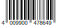
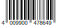
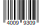
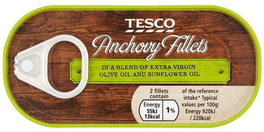
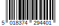
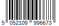
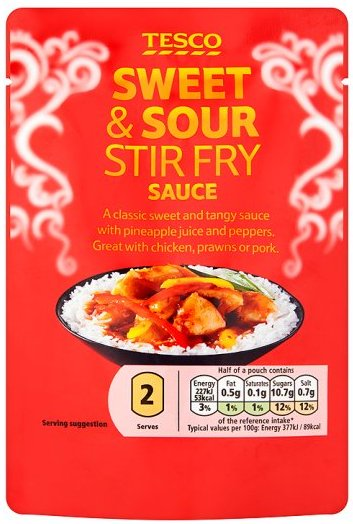

Some test images of GTIN barcodes
Test the GS1 Web application at https://data.gs1.org/scan/ by scanning the barcodes on this page (no installation required).

 GS1's Barry the Bear (expect to be taken to his homepage at https://data.gs1.org/gtin/09507000009060).

GS1's Barry the Bear (expect to be taken to his homepage at https://data.gs1.org/gtin/09507000009060).


A multi pack and an individual pack of Wrigley's Juicy fruit gum. The application will be redirected from https://data.gs1.org/gtin/4009900478649 and https://data.gs1.org/gtin/40099309 to the page specified by the brand owner, in this case, the Juicy Fruit Facebook page.


A tin of Tesco own-brand anchovies. The application will be redirected from https://data.gs1.org/gtin/5018374294401 to the product page on Tesco's website. At the moment this is https://www.tesco.com/groceries/en-GB/products/258452081 but we believe the same page will soon have an alias of https://www.tesco.com/groceries/gtin/258452081.


Similarly, the application will be redirected from https://data.gs1.org/gtin/5052109996673 to the product page on Tesco's website at https://www.tesco.com/groceries/en-GB/products/271811708.